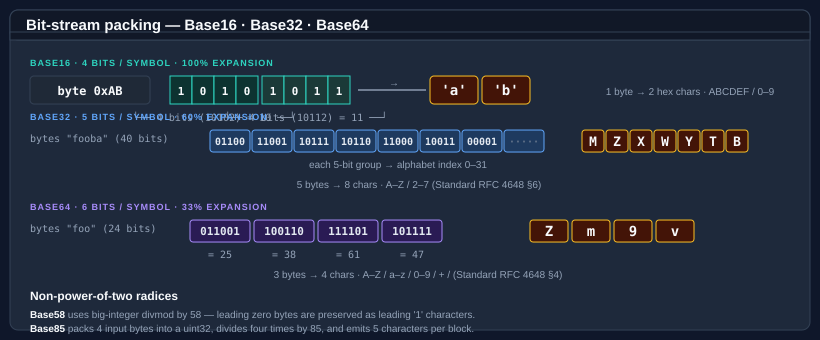
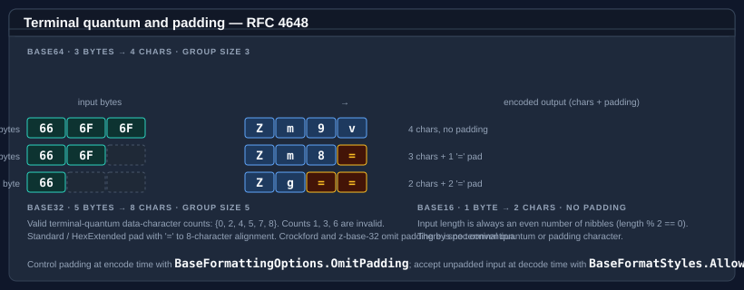

Bodu.Text.Encoding — Core concepts
This page is the vocabulary the rest of the documentation assumes. Read it once before the getting-started samples or the guides, and refer back whenever a term feels imprecise.
Part of the Text & Serialization topic.
For the high-level shape of the library and the type map, start with the introduction.
Encoding and variant
An encoding is the family-level concept: the five core radices — Base16, Base32, Base64, Base58, Base85 — plus the special-purpose Base45, Base62, and Bech32. Each family has a radix (16, 32, 64, 58, 85, 45, 62, 32) which determines how many bits each output symbol represents.
A variant is a specific choice within an encoding family — typically a different alphabet but sometimes different padding, line-wrap, or shortcut rules:
| Family | Variants in this library |
|---|---|
| Base16 | Lower (default), Upper — via the Base16Variant enum, or equivalently BaseFormattingOptions.UpperCase |
| Base32 | Standard (RFC 4648 §6), HexExtended (RFC 4648 §7), Crockford, ZBase32 |
| Base64 | Standard (RFC 4648 §4), UrlSafe (RFC 4648 §5), Mime (RFC 2045) |
| Base58 | BitcoinFlickr (default), Ripple |
| Base85 | Ascii85 (Adobe Tech Note 5045), Z85 (RFC 32 ZeroMQ), GitCompact (Git base85.c) |
| Base45 | RFC 9285 (single alphabet) |
| Base62 | GMP-style (single alphabet) |
| Bech32 | Bech32 (BIP 173, default), Bech32m (BIP 350) — selected by Bech32Encoding |
Alphabet
The alphabet is the set of characters a variant uses to represent the radix digits. The position of each character in the alphabet string is its numeric value.
Base16: "0123456789abcdef" (lower case, 16 chars)
Base32 Standard: "ABCDEFGHIJKLMNOPQRSTUVWXYZ234567" (RFC 4648 §6)
Base32 HexExtended: "0123456789ABCDEFGHIJKLMNOPQRSTUV" (RFC 4648 §7)
Base32 Crockford: "0123456789ABCDEFGHJKMNPQRSTVWXYZ" (no I L O U)
Base32 Z-Base-32: "ybndrfg8ejkmcpqxot1uwisza345h769"
Base64 Standard: "A..Za..z0..9+/" (RFC 4648 §4)
Base64 URL-safe: "A..Za..z0..9-_" (RFC 4648 §5)
Base58 Bitcoin/Flickr: "123456789ABCDEFGHJKLMNPQRSTUVWXYZabcdefghijkmnopqrstuvwxyz" (no 0 O I l)
Base85 Ascii85: '!' (33) through 'u' (117) (Adobe alphabet)
Base85 Z85: "0..9a..zA..Z.-:+=^!/*?&<>()[]{}@%$#" (shell-safe)
Base45: "0..9A..Z" + " $%*+-./:" (45 chars, RFC 9285)
Base62: "0..9A..Za..z" (GMP order: digits, upper, lower)
Bech32: "qpzry9x8gf2tvdw0s3jn54khce6mua7l" (5-bit values 0..31, BIP 173)
Bit packing
For power-of-two radices (Base16, Base32, Base64), encoding is a bit-stream operation: input bytes are
concatenated into a bit stream, then chunked into N-bit groups (where N is log2(radix)). Each N-bit group becomes
one output symbol.

Base58 is not a power of two: it uses big-integer divmod by 58. Base62 works the same way with divmod by 62.
Base85 uses 4-byte blocks packed into a 32-bit unsigned integer, then divided by 85 four times to emit five
characters. Base45 packs each 2-byte group into a base-45 triple (a trailing single byte becomes 2 characters).
Bech32 is a 5-bit (base-32) bit-stream like Base32, but wrapped with a human-readable part, a 1 separator, and a
six-symbol checksum computed over the whole data part.
The quantum is the smallest whole number of input bytes that maps to a whole number of output characters — the unit the encoder and decoder repeat across the stream. For the power-of-two radices it is the least common multiple of the byte (8 bits) and the symbol width:
| Family | Quantum | Bits | Output symbols | Why |
|---|---|---|---|---|
| Base16 | 1 byte | 8 | 2 | 8 ÷ 4 = 2, no remainder — every byte is self-contained |
| Base32 | 5 bytes | 40 | 8 | lcm(8, 5) = 40 → 40 ÷ 5 = 8 |
| Base64 | 3 bytes | 24 | 4 | lcm(8, 6) = 24 → 24 ÷ 6 = 4 |
| Base85 | 4 bytes | 32 | 5 | a 32-bit block is the natural unit; 85⁵ ≥ 2³² |
| Base45 | 2 bytes | 16 | 3 | 45³ = 91 125 ≥ 2¹⁶ = 65 536 |
Base58 and Base62 have no quantum — big-integer divmod runs over the whole input at once, so there is no
repeating block and no exact per-block ratio (only the data-dependent GetMaxEncodedLength bound applies).
Terminal quantum
The terminal quantum is the last group at the end of the input. When the input does not divide evenly into the group size, the spec defines which character counts are legal and how padding aligns the output.

RFC 4648 quantum rules:
| Encoding | Group size | Valid terminal-quantum data-character counts |
|---|---|---|
| Base16 | 1 byte → 2 chars | Always even (length must be a multiple of 2) |
| Base32 (Standard / HexExtended) | 5 bytes → 8 chars | {0, 2, 4, 5, 7, 8} — counts 1, 3, 6 are invalid |
| Base64 (Standard / UrlSafe / Mime) | 3 bytes → 4 chars | {0, 2, 3, 4} — count 1 is invalid |
Crockford Base32 and z-base-32 do not impose terminal-quantum rules. Base58 has no quantum. Base85 partial-group sizes are 1, 2, or 3 bytes for Ascii85; Z85 requires exact 4-byte alignment.
Padding
Padding is the = character that Base32 and Base64 append after a partial terminal quantum so the output
length aligns to the group size. For a 3-byte Base64 input, no padding is needed (3 → 4 chars exactly); for
2-byte input the output is 4 chars including one =; for 1-byte input, two =.
| Variant | Padding by default |
|---|---|
| Base32 Standard / HexExtended | Yes (RFC 4648 mandates) |
| Base32 Crockford / ZBase32 | No (by spec convention) |
| Base64 Standard / Mime | Yes (RFC 4648 / 2045 mandate) |
| Base64 UrlSafe | No (JWT / OAuth convention; can be added with omission of OmitPadding) |
| Base58 | No padding character |
| Base85 | No padding character — alignment is via partial-group truncation (Ascii85) or fixed 4-byte alignment (Z85) |
Control padding at encode time with BaseFormattingOptions.OmitPadding, and accept unpadded input at decode time
with BaseFormatStyles.AllowMissingPadding.
Shortcut
A shortcut is a single character that stands in for a full all-zero group. Only Adobe Ascii85 defines one:
| Variant | Shortcut | Meaning |
|---|---|---|
| Base85 Ascii85 | z |
Four zero bytes (0x00 0x00 0x00 0x00) |
Z85 has no shortcut — even all-zero input emits five 0 characters.
Decoration
A decoration is an optional, non-data character or marker added at encode time for human readability or container framing, and tolerated at decode time when explicitly allowed:
| Decoration | Encode flag | Decode flag | Applies to |
|---|---|---|---|
0x prefix |
BaseFormattingOptions.IncludePrefix |
BaseFormatStyles.AllowPrefix |
Base16 |
Byte spacing (e.g. DE AD BE EF) |
BaseFormattingOptions.InsertSpacing |
(combine with IgnoreWhitespace) |
Base16 |
| Line breaks every N chars (64 for Base16, 76 for Base64 Mime) | BaseFormattingOptions.InsertLineBreaks |
(combine with IgnoreWhitespace) |
Base16, Base32, Base64 |
| Case folding (lower / upper) | BaseFormattingOptions.UpperCase |
implicit (decoders are case-insensitive) | Base16, Base32 |
Encoder vs. decoder strictness
Encoders are deterministic — given a byte sequence and an options set they always produce the same canonical
output. Decoders are typically strict by default — only the canonical alphabet, padding, and quantum length
are accepted — and lenient when BaseFormatStyles flags are set:
strict mode (BaseFormatStyles.None)
• only alphabet characters
• exact padding alignment for padded variants
• valid terminal-quantum length
lenient mode (one or more BaseFormatStyles flags)
AllowPrefix → tolerate "0x" / "0X" prefix at the start
IgnoreWhitespace → strip ASCII space, tab, CR, LF anywhere
AllowMissingPadding → accept inputs without the trailing "=" characters
stricter mode (a flag that tightens, not relaxes)
RequireCanonicalEncoding → reject a non-canonical terminal symbol whose unused
trailing bits are non-zero
The Decode overloads throw FormatException on validation failure. The TryDecode overloads return
false instead. The IsValid predicate returns true only for inputs that the strict decoder would accept
(when no leniency flags are passed).
Canonical-form enforcement
BaseFormatStyles.AllowPrefix, IgnoreWhitespace, and AllowMissingPadding all relax the decoder.
BaseFormatStyles carries one flag that goes the other way —
RequireCanonicalEncoding tightens it. For a partial terminal quantum the spec only fills some of the bits a
symbol can carry; RFC 4648 §3.5 leaves the unused trailing bits unconstrained, so several distinct encoded strings
can decode to the same bytes. The Base64 pair QQ== and QR== both yield the single byte 0x41; only QQ== is
canonical (its 4 unused trailing bits are zero). Passing RequireCanonicalEncoding rejects every form whose unused
bits are non-zero, so each byte sequence has exactly one accepted encoding:
Base64.Decode("QR==", Base64Variant.Standard); // ok — non-canonical tolerated, → 0x41
Base64.Decode("QR==", Base64Variant.Standard, BaseFormatStyles.RequireCanonicalEncoding); // FormatException
The flag applies to Base32 and Base64 — the bit-stream families with unused terminal bits. It is a no-op for Base16 (no unused bits per character), Base58 (canonicity is leading-zero preservation, enforced unconditionally), and Base85 (block-based, with its own tail convention). Reach for it on a decode path where a single canonical representation is a security or comparison requirement — content-addressed identifiers, deduplication keys, signature inputs.
UTF-8 path
Every encoding family exposes a UTF-8 byte path alongside the character path:
encode: EncodeToUtf8(ReadOnlySpan<byte>) → byte[]
TryEncodeToUtf8(ReadOnlySpan<byte>, Span<byte>, out int, …)
decode: FromBase{N}String(ReadOnlySpan<byte> utf8Source, Span<byte> dst, out int consumed, out int written)
→ OperationStatus
DecodeFromUtf8(ReadOnlySpan<byte>, Span<byte>, out int, out int, …, isFinalBlock)
→ OperationStatus
Because every encoding alphabet is ASCII, the UTF-8 byte form is bit-identical to the character form. This path is
the natural choice when bytes come from a network / file pipeline and you want to avoid allocating a string or
char[] between stages.
GUID convenience surface
Each of the five core families ships an overload pair that encodes a Guid directly, so you never have to materialise the 16-byte buffer yourself:
string id = Base58.Encode(Guid.NewGuid()); // compact, ambiguity-free GUID token
Guid value = Base58.DecodeGuid(id); // throws FormatException unless it decodes to 16 bytes
bool ok = Base58.TryDecodeGuid(id, out Guid parsed); // non-throwing form
The members are Encode(Guid, …), DecodeGuid(ReadOnlySpan<char>, …), and
TryDecodeGuid(ReadOnlySpan<char>, out Guid, …), each carrying the same variant / options / styles
arguments as the byte overloads (Base16 takes no variant; Base58 has no encode-side options). The bytes are the
GUID's native mixed-endian layout — identical to Guid.TryWriteBytes — so DecodeGuid(Encode(g)) reconstructs g
exactly, and DecodeGuid raises FormatException if the input does not decode to precisely 16 bytes.
OperationStatus and streaming
The OperationStatus return convention (from System.Buffers) is the same one System.Buffers.Text.Base64 uses:
| Value | Meaning |
|---|---|
Done |
Input fully consumed and decoded |
DestinationTooSmall |
Destination span cannot hold the output |
InvalidData |
Input contains a character outside the variant alphabet or violates structural rules |
NeedMoreData |
(Streaming only — isFinalBlock: false) The input ends mid-quantum and may resolve with more bytes |
Use isFinalBlock: true when the input you are passing is the entire data (default). Use isFinalBlock: false to
stream data through chunk by chunk — the decoder will report NeedMoreData instead of InvalidData for inputs
that could complete with another chunk.
Base58 and Base85 are not streamable: each requires the entire input to be available before decode (Base58 because of big-integer arithmetic, Base85 because of fixed-size block packing). The
isFinalBlockparameter on those variants is accepted for API consistency but has no behavioural effect.The special-purpose encodings — Base45, Base62, and Bech32 — are likewise single-shot and expose no
OperationStatuspath at all (Base45 packs in fixed groups, Base62 uses big-integer arithmetic, and Bech32 must read the whole string to verify its checksum). They throwFormatExceptionon invalid input and offerTry*methods that report failure asfalse.
IBinaryEncoding interface
The static classes are the primary entry point. For code that must select an encoding at runtime — a configuration-driven serializer, a plugin pipeline, a generic utility — use the IBinaryEncoding interface and one of the pre-configured instances in BinaryEncodings:
IBinaryEncoding encoding = BinaryEncodings.Get("base64-urlsafe");
string token = encoding.Encode(secretKey);
The interface deliberately hides variant-specific options (line breaks, padding control, MIME wrapping). Code that needs those should keep using the static classes directly.
Where to go next
- Getting started — install + minimal sample per encoding type.
- Bodu.Text.Encoding guides — using each encoding, choosing variants, streaming, the
IBinaryEncodinginterface. - Bodu.Text.Encoding API reference — full type-by-type docs.
- Introduction — type map, scenarios, where each encoding fits.
- Text & Serialization topic — this package alongside Bodu.Text.Formats and the Bencode / TOML serializers; the topic concepts page collects the shared vocabulary.